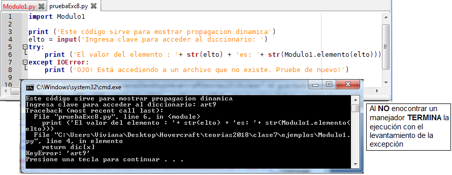
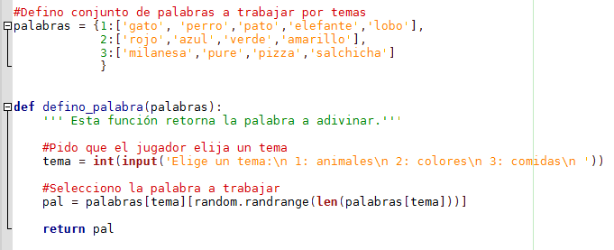

Seminario de Lenguajes - Python
Cursada 2019
Temario
- Repaso de la clase anterior.
- Listas por comprensión
- Manejo de excepciones.
- Avanzando en PySimpleGUI
Repaso. Por Python Plus!!
Repaso. Por Python Plus!!
- ¿Qué diferencias y semenjanzas hay entre un archivo y un diccionario?
- ¿Qué es un archivo en Python?
- ¿Qué diferencias hay entre los modos "w", "x" y "a"?
- ¿Qué diferencias hay entre un archivo de texto y uno binario?
Repaso. Por Python Plus!!
archi = open('archivo.txt')
archi1 = open('otro.txt', "rb+")- ¿De qué modo se abre estos archivos?
- ¿Cuándo pueden dar un error estas sentencias?
- ¿De qué formas puedo leer y guardar datos en un archivo?
- ¿Cómo detectamos el fin de archivo?
Repaso. Por Python Plus!!
- ¿Qué está mal en el siguiente código?
import pickle
import time
archivo = open("superHeroesEnPICKLE.txt", "w")
datos = [
{'nombre': 'Tony Stark', 'fecha': time.strftime("%a, %d %b %Y %H:%M:%S +0000", time.gmtime())},
{'nombre': 'Bruce Wayne', 'fecha': time.strftime("%a, %d %b %Y %H:%M:%S +0000", time.gmtime())}
]
pickle.dump(datos, archivo)
archivo.close()- ¿Qué diferencias hay entre el módulo json y pickle?
Repaso. Por Python Plus!!
- ¿Qué son stdin, stdout, stderr?
- ¿Cómo los abro?
Listas por comprensión
- Las listas por comprensión son otra manera de crear listas
- Permite hacerlo de una manera más concisa. En vez de detallar todos sus elementos se coloca una expresión seguida de una cláusula for que representan a los elementos
- Hasta ahora si queríamos crear una lista, por ejemplo con los cuadrados de los primeros 100 números hacíamos:
cuadrados = []
for nro in range (100):
cuadrados.append(nro**2)- ¿Cómo lo haríamos en forma más concisa?
Listas por comprensión
cuadrados = [nro**2 for nro in range(100)]
Listas por comprensión con expresiones condicionales
- Esta posibilidad nos permite quedarnos con ciertos elementos y descartar los restantes.
- Para esto se debe utilizar una cláusula if después de la cláusula for.
- Ejemplo: ¿Cómo haríamos si queremos listar los cuadrados pero SOLO de los primeros números pares?
Listas por comprensión con expresiones condicionales
cuadrados = [nro**2 for nro in range(100) if nro % 2 == 0]
Manejo de excepciones
- ¿Qué es un excepción?
- ¿Qué hay que investigar del lenguaje cuando tiene manejo de excepciones?
- Excepciones en Python
Analicemos el siguiente código
¿Qué puede suceder cuando lo ejecutamos?
alum_cod_libros_prestados = {33444555:['a33','a45'], 341122555:['b133'], 40999988:['a22','a45','b77']}
dni_alumno = int(input('Ingresa tu dni'))
while dni_alumno !=0:
cod_libro = input('Ingresa cod_libro a pedir')
alum_cod_libros_prestados[dni_alumno].append(cod_libro)
dni_alumno = int(input('Ingresa tu dni'))Veamos
¿Qué sucedío?
Levantamiento de excepción
Se levantó una excepción al introducir un DNI que no coincidia con ninguna clave del diccionario
¿Qué es una excepción?
Una excepción es un acontecimiento, que ocurre durante la ejecución de un programa, que interrumpe el flujo normal de las instrucciones de programa.
Ejemplo de excepciones:
- Abrir un archivo que no existe.
- Acceder a una clave de diccionario que no existe .
- Buscar en una lista un valor que no existe.
- Invocar a un método que no existe.
- Referirse a una variable que no existe.
- Mezclar tipos de datos sin convertirlos previamente.
- Etc.
Ejemplo de excepciones "sin manejar o gestionar"
Python ¿maneja excepciones?
Hay lenguajes que:
- No presentan mecanísmos para el manejo de excepciones. En esos casos podrían simular el manejo de las excepciones con otros recursos. Ej. Pascal
- Presentan mecanismos para el manejo de excepciones y, cuentan con recursos específicos para hacerlo. Ej.: Ada, Java, Ruby, etc.
¿Python?
¿Qué investigamos del lenguaje cuando tiene manejo de excepciones?
- ¿Qué acción se toma después de levantada y manejada una excepción?. ¿Se continúa con la ejecución de la unidad que lo provocó o se termina?
- ¿Cuál es su ámbito?
- ¿Cómo se alcanza una excepción?
- ¿Cómo especificar la unidades (manejadores de excepciones) que se han de ejecutar cuando se alcanza las excepciones?
- ¿Qué sucede cuando no se encuentra un manejador para una excepción levantada?
- ¿El lenguaje tiene excepciones predefinidas?
Manejo de excepciones en Python
¿Estructura opcional?
¿Usamos manejo de excepciones?
Si no utilizamos manejo de excepciones...
Si utilizamos manejo de excepciones...
Hagamos la prueba
¿Qué sucedío?
Con manejo de excepciones...
Evitamos que el proceso se corte agregando el elemento al diccionario
Y ¿cómo hacemos para que el for siga hasta el final?..
Si quisieramos que continue el for...
Probemos
¿Qué sucedío?
¿Y las cláusulas else y finally?
El código colocado en la cláusula else se ejecuta solo si no se levanta una excepción
El código colocado en la cláusula finally se ejecuta siempre se haya o no levantado una excepción
Cláusulas else
¿Se ejcuta o no la cláusula else? Lo vemos
Resultados de ejecutar y no ejecutar la cláusula else
No se ejecuta la cláusula else
Y si termina normal?
Probamos?
Se ejecuta la cláusula else
Cláusulas finally
¿Se ejcuta o no la cláusula finally? Lo ejecutamos?
Se ejecuta la cláusula finally
Lo ejecutamos de nuevo?
Al terminar en forma normal el bloque...
También se ejecuta la cláusula finally
¿Qué sucede en estos casos?
Debemos indagar sobre ...
La forma de propagación que utiliza Python.
- Cuando no encuentra un manejador para la excepción levantada, ¿dónde busca?
¿Qué hizo?
- ¿Qué pasó con las sentencias..?
y = y + 1
print ('El valor de y es:' + str(y))El ejemplo demuestra que...
Python aplica el mecanismo de terminación
- Y.. ¿qué sucede si no encuentra un manejador?
Busca dinámicamente
¿Qué sucede?
Sucedió que...
- El error se levantó dentro de la función elemento del Modulo1.py
- Al no manejarse allí la excepción y, al no encontrar un manejador para esa excepción..
- Bajó dinámicamente a quién lo llamó.
¿Y sino encuentra un manejador?...
Se aborta el programa

Levantando excepciones "explícitamente"
- El programador puede levantar explícitamente una excepción con la sentencia raise
Excepciones predefinidas (Built-in)
- Alguna de ellas:
- EOFError: errores de EOF.
- ImportError: error con importación de módulos.
- ModuleNotFoundError: error por módulo no encontrado.
- IndexError: error por índice fuera de rango.
- KeyError: error por clave inexistente.
- NameError: error por nombre no encontrado.
- SyntaxError: error por problemas sintácticos
- ZeroDivisionError: error por división por cero.
- IOError: error en entrada salida.
- Etc.
El programador puede definir nuevas excepciones definiendo clases que deriven de Excpetion.
¿Retomamos el juego del ahorcado?
- Pensemos en modificarlo para hacerlo más personalizado.
- El programa debería poder levantar los temas y palabras desde un archivo.
- ¿Retomamos el último modificado (ahorcado con funciones)?
Y modificamos...
Esta parte del código ...

Haciendo lo siguiente...
Colocamos al comienzo la sentencia import json y..
Vemos si funciona?
¿Y qué pasa si no encuentra el archivo?...
Se levanta una excepción
¿Solución?
Con manejo de excepciones
¿Vemos el ejemplo?
¿Y que pasa si ingreso una opción no listada?
Pensar en la solución..
¿Y si lo implementamos con PySimpleGUI?
¿Lo vemos?..
PySimpleGUI: Algunas cosas más ...
¿Qué pudimos ver en el programa?
- Diseño de la interface presentado en columnas
- Procesamiento de los datos ingresados
Capa Layout: diseño de la interface
- Para diseñar la interface que colocaremos sobre una ventana debemos:
- Armar una lista de listas.
- Cada elemento de la lista contendrá un lista con todos los elementos que van a estar en una línea
- Cada elemento es a su vez una lista
Armando un diseño para esa interface
import PySimpleGUI as sg
#Armo el diseño de la interface
diseño = [
[sg.Text('Ingresa tus datos')],
[sg.Text('Nombre'), sg.InputText(),sg.Text('Nombre'), sg.InputText() ],
[sg.Text('Tipo Doc'), sg.Listbox(values=('DNI','LE', 'PAS'), size=(30, 1)), sg.Text('Número'), sg.InputText()],
[sg.Text('fecha de Nac'), sg.InputText(),sg.Text('Nacionalidad'), sg.InputText() ],
[ sg.Submit(), sg.Cancel()]
]
#La aplico a la ventana y la muestro
window = sg.Window('Datos Personales').Layout(diseño)
window.Read()¿Vemos como queda?
Armando un diseño para esa interface
¿Así como está ... puedo manipular los datos ingresados por el usuario?
- window.Read() no solo muestra la ventana sino que retorna información de las acciones por el usuario
- Devuelve dos valores:
- El texto del botón que se cliqueo
- Una lista de valores que el usuario ingresó
Trabajando con la información ingresada por el usuario
- Deberíamos entonces:
- Almacenar esos datos para poder manipularlos.
- En el código anterior, la última sentencia la podríamos cambiar por:
(boton_cliqueado, datos_ingresados) = window.Read()
Lo probamos y vemos qué información nos da?
Mejorando el diseño de interface
- Supongamos que ahora queremos mostrar los datos de la siguiente forma:
- Donde los elementos no están dispuestos en forma de líneas sino en forma de columnas
- Se deberá armar el diseño para cada columna
- Con el uso del elemento Column se incorporan al diseño general de la ventana
Elemento Columna
Column(Diseño_Columna, background_color= color)
Armando del diseño con columnas
import PySimpleGUI as sg
#Armando una columna
columna_1 = [ [sg.Text('Nombre'), sg.InputText()],
[sg.Text('Apellido'), sg.InputText()] ]
columna_2 = [ [sg.Text('Tipo Doc'), sg.Listbox(values=('DNI','LE', 'PAS'), size=(30, 1))],
[sg.Text('Número'), sg.InputText()],
[sg.Text('Nacionalidad'), sg.InputText()] ]
#Armo el diseño de la interface
diseño = [
[sg.Text('Ingresa tus datos')],
[sg.Column(columna_1), sg.Column(columna_2)],
[ sg.Submit(), sg.Cancel()]
]
#La aplico a la ventana y la muestro
window = sg.Window('Datos Personales').Layout(diseño)
window.Read()¿Cómo se verá ahora?
¿Se animan?
- ¿Se animan a hacer el ahorcado usando PySimpleGUI?
Resumen
- Repaso entrada salida de archivos
- Listas por comprensión
- Manejo de excepciones
- Más sobre PySimpleGUI
- Avanzamos en PySimpleGUI